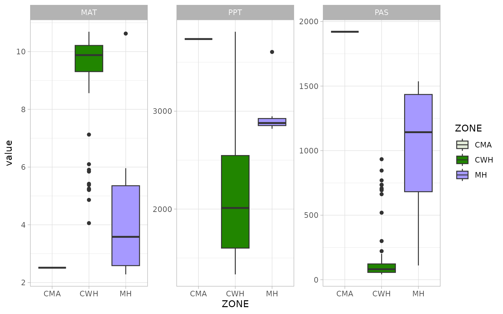
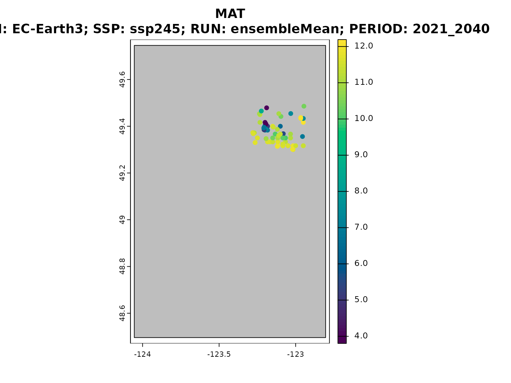
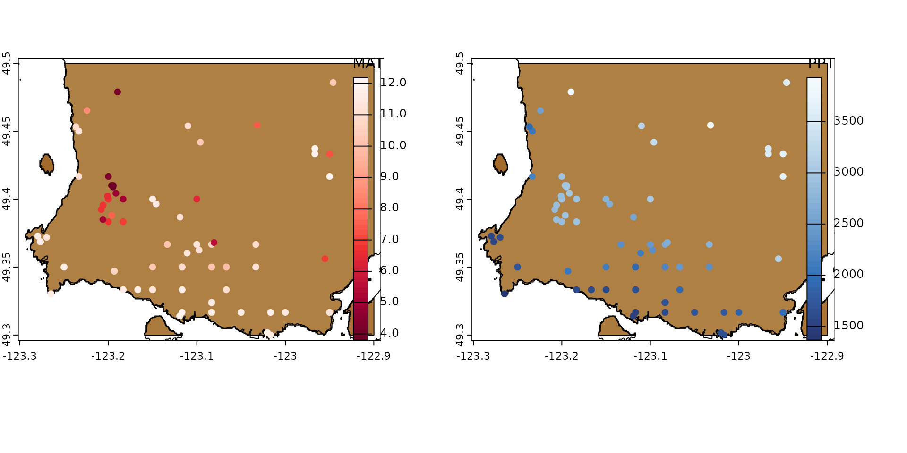

`climr` workflow - intermediate
climr_workflow_int.RmdIntroduction
climr is in essence similar to ClimateNA in that it downscales low-resolution
(~100km) global climate model anomalies to high-resolution (1-4km) maps
of climate, with further elevation adjustment to user-specified
elevation grids/points based on empirical lapse rates (local
relationship of climate to elevation) of the 1-4km climate maps. The
elevation-adjusted monthly values of basic climate elements (temperature
and precipitation) are then used to estimate derived variables (e.g.,
degree-days, precipitation as snow) based on published equations and
parameters from (Wang et al. 2016).
See vignette("methods_downscaling.Rmd") for a detailed
explanation of the downscaling methodology employed in
climr.
climr’s strenghts are:
- its ability to obtain multiple, individual runs of a (or several) General Circulation Model(s) (GCM), as well as the ensemble cross-run mean,
cloud-based raw data access and local data caching,
and direct
Rinterface to downscaled climate elements and derived variables covering western Canada and western US.
In this vignette we cover two basic climr workflows to
obtain historic and future climate projections of a few derived
variables.
The first, less code-heavy, workflow uses
climr_downscale() to do much of the heavy lifting –
[Workflow with climr_downscale]. The second workflow is a step-by-step
breakdown of climr_downscale() using the functions
climr_downscale() calls internally – [Workflow with *_input
functions and downscale].
Main functions
Below is a list of the main functions used in the two workflows.
climr_downscale()takes adata.tableof point coordinates (in lat-long projection), obtains climate normals and historic and/or future projections covering the extent of the points, which are then downscaled using point elevation data and used to calculate derived climate variables at the point locations. It outputs the downscaled and derived variables in the form of adata.tableorSpatVectorof points.normal_input()downloads and prepares high-resolution climate normals. Called internally byclimr_downscale().historic_input()andhistoric_input_ts()download and prepare low-resolution historic climate elements for a given historic period or time series, respectively. Called internally byclimr_downscale().gcm_input(),gcm_hist_input()andgcm_ts_input()download and prepare low-resolution climate element projections for a future period, historic period or future time series, respectively. Called internally byclimr_downscale().downscale()downscales historic or future climate elements and calculates derived climate variables. Called byclimr_downscale().
Workflow with climr_downscale
In this example workflow we use climr_downscale() to
calculate mean annual temperature (MAT), total annual precipitation
(PPT) and precipitation as snow (PAS) at weather stations associated
with the Adjusted
and homogenized Canadian climate data.
We will downscale MAT, PPT and MAS at these locations for a historic and a future period, using two separate runs of a GCM and one emissions scenario.
We begin by loading the Adjusted Precipitation for Canada (APC2) dataset and clipping it to the North Vancouver area. This dataset already contains elevation information.
Note that longitude (‘lon’) and latitude (‘lat’) must be in lat-long projection (EPSG:4326) and elevation in m. Point IDs must be unique – we will use the weather station IDs.
We will also add two other columns in our data.table
(‘ZONE’ and ‘HEZ’) these are ignored by climr_downscale().
climr_downscale() preserves the IDs and we use them to join
back the extra columns used for plotting later on.
library(climr)
library(data.table)
library(terra)
## weather station locations
weather_stations <- get(data("weather_stations")) |>
unwrap()
## study area of interest (North Vancouver)
vancouver_poly <- get(data("vancouver_poly")) |>
unwrap()
## subset to points in study area
weather_stations <- mask(weather_stations, vancouver_poly)
## convert to data.table and subset/rename columns needed by climr
xyzDT <- as.data.table(weather_stations, geom = "XY")
cols <- c("Station ID", "x", "y", "Elevation (m)")
xyzDT <- xyzDT[, ..cols]
setnames(xyzDT, c("id", "lon", "lat", "elev"))
## join BEC zones and colours
BECz_vancouver <- get(data("BECz_vancouver")) |>
unwrap()
BECz_points <- extract(BECz_vancouver, weather_stations) |>
as.data.table()
BECz_points <- BECz_points[, .(ZONE, HEX)]
xyzDT <- cbind(xyzDT, BECz_points)
## remove duplicates
xyzDT <- unique(xyzDT)
## there are some duplicate stations with slightly different
## coordinates. We'll take the first
xyzDT <- xyzDT[!duplicated(id)]Weather stations in North Vancouver
The list_*() functions below provide a list of available
historic and future periods, GCMs, emissions scenarios, and derived
variables (in this case only the annual ones).
list_historic()
#> [1] "2001_2020"
list_gcm_period()
#> [1] "2001_2020" "2021_2040" "2041_2060" "2061_2080" "2081_2100"
list_gcm()
#> [1] "ACCESS-ESM1-5" "BCC-CSM2-MR" "CanESM5" "CNRM-ESM2-1"
#> [5] "EC-Earth3" "GFDL-ESM4" "GISS-E2-1-G" "INM-CM5-0"
#> [9] "IPSL-CM6A-LR" "MIROC6" "MPI-ESM1-2-HR" "MRI-ESM2-0"
#> [13] "UKESM1-0-LL"
list_ssp()
#> [1] "ssp126" "ssp245" "ssp370" "ssp585"
list_variables(set = "Annual")
#> [1] "AHM" "bFFP" "CMD" "CMI" "DD_0" "DD_18" "DD18" "DD5" "eFFP"
#> [10] "EMT" "Eref" "EXT" "FFP" "MAP" "MAT" "MCMT" "MSP" "MWMT"
#> [19] "NFFD" "PAS" "PPT" "RH" "SHM" "Tave" "TD" "Tmax" "Tmin"We will chose the only available historic period (2001-2020), the 2021-2040 future period, the ‘EC-Earth3’ GCM and the SSP 2.45 scenario. MAT, PPT and PAS will be selected as output variables.
We pass our choices to climr_downscale(), choosing the
“auto” normals option (which defaults to using the highest resolution
data available for the points selected).
ds_out <- climr_downscale(
xyz = xyzDT,
which_normal = "auto",
historic_period = "2001_2020",
gcm_period = "2021_2040",
gcm_models = "EC-Earth3",
ssp = "ssp245",
max_run = 2,
return_normal = TRUE, ## to return the 1961-1990 normals period
vars = c("MAT", "PPT", "PAS")
)
#> Welcome to climr!
#> Getting normals...
#> for BC...
#> Downloading new data...
#> .
#> Caching data...
#> Getting historic...
#> Downloading historic anomalies
#> .
#> Caching data...
#> Getting GCMs...
#> Downloading GCM anomalies
#> .
#> Caching data...
#> Downscaling!!Note how data from historical periods doesn’t have a GCM or SSP value – this is expected , as GCMs and SSPs are used to project future climate values. Also, future projections were obtained for two runs of EC-Earth3 (‘r1i1p1f1’ and ‘r10i1p1f1’), plus the ensemble mean.
| id | GCM | SSP | RUN | PERIOD | MAT | PPT | PAS |
|---|---|---|---|---|---|---|---|
| 87 | NA | NA | NA | 1961_1990 | 9.738779 | 2614.527 | 365.0191 |
| 87 | NA | NA | NA | 2001_2020 | 10.047888 | 2565.122 | 316.0789 |
| 87 | EC-Earth3 | ssp245 | ensembleMean | 2021_2040 | 11.254584 | 2682.471 | 214.3795 |
| 87 | EC-Earth3 | ssp245 | r15i1p1f1 | 2021_2040 | 10.812713 | 2773.671 | 267.7330 |
| 87 | EC-Earth3 | ssp245 | r1i1p1f1 | 2021_2040 | 11.460546 | 2711.424 | 195.9670 |
To add back the extra columns we need only a simple left join.
ds_out <- xyzDT[, .(id, ZONE, HEX)][ds_out, on = .(id)]We can now do a simple visualisation of climate variation by biogeoclimatic zone (‘ZONE’), in the normals period of 1961-1990:
plotdata <- melt(ds_out, measure.vars = c("MAT", "PPT", "PAS"))
cols <- plotdata$HEX
names(cols) <- plotdata$ZONE
cols <- cols[!duplicated(cols)]
ggplot(plotdata[PERIOD == "1961_1990"], aes(x = ZONE, y = value, fill = ZONE)) +
geom_boxplot() +
theme_light() +
scale_fill_manual(values = cols) +
facet_wrap(~ variable, scales = "free")
We may also want yearly climate projections. In this case, we want the yearly values of MAT and PPT for 2001-2015 and 2021:2040, using the same GCM, SSP and number of model runs. Notice how some of the data doesn’t need to be downloaded again, and was retrieved from cache.
The climr_downscale() internally rescales the projected
historical values so that they align with their observed counterpart.
See vignette("methods_downscaling.Rmd") for details.
ds_out_ts <- climr_downscale(
xyz = xyzDT,
which_normal = "auto",
historic_ts = 2001:2015, ## currently up to 2015
gcm_hist_years = 2001:2020, ## currently up to 2010
gcm_ts_years = 2021:2040, ## currently starting at 2021
gcm_models = "EC-Earth3",
ssp = "ssp245",
max_run = 1,
return_normal = TRUE, ## to return the 1961-1990 normals period
vars = c("MAT", "PPT", "PAS")
)
#> Welcome to climr!
#> Getting normals...
#> for BC...
#> Retrieving from cache...
#> Downloading historic anomalies
#> .
#> Caching data...
#> Downloading GCM anomalies
#> Precip...
#> .
#> Tmax...
#> .
#> Tmin...
#> .
#> Caching data...
#> Downloading GCM anomalies
#> .
#> Caching data...
#> Downscaling!!To plot the time series, we will filter the data to a single model
run (i.e. in this case discard the ensemble means) and to a single point
location. Note that we plot both the observed (obs_hist)
and the projected historical (proj_hist) climate values
along with future climate projections (proj_fut).
ds_out_ts[is.na(GCM), GCM := "Historic"]
ds_out_ts <- ds_out_ts[!grepl("ensemble", RUN)]
ds_out_ts <- ds_out_ts[!grepl("1961_1990", PERIOD)]
plotdata <- melt(ds_out_ts, measure.vars = c("MAT", "PPT", "PAS"))
plotdata[, PERIOD := as.numeric(PERIOD)]
plotdata <- plotdata[id == head(id,1)]
## time series period groupings
plotdata[GCM == "Historic", pgrp := "obs_hist"]
plotdata[GCM != "Historic" & PERIOD <= 2020, pgrp := "proj_hist"]
plotdata[GCM != "Historic" & PERIOD > 2020, pgrp := "proj_fut"]
## make groups so that missing data is not shown as a "line connection"
groups <- data.table(PERIOD = unique(plotdata$PERIOD))
groups[, idx := c(1, diff(PERIOD))]
i2 <- c(1, which(groups$idx != 1), nrow(groups) + 1)
groups[, grp := rep(1:length(diff(i2)), diff(i2))]
plotdata <- groups[, .(PERIOD, grp)][plotdata, on = "PERIOD"]
plotdata[, grp := paste(grp, variable, sep = "_")]
yrbreaks <- c(
min(plotdata$PERIOD),
seq(min(plotdata$PERIOD), max(plotdata$PERIOD), by = 5),
max(plotdata$PERIOD)
) |>
unique()
ggplot(plotdata, aes(x = PERIOD, y = value, col = pgrp, group = grp)) +
geom_line(data = plotdata[pgrp == "obs_hist"], size = 1.1,
linejoin = "round", lineend = "round") +
geom_line(data = plotdata[pgrp != "obs_hist"], size = 1.1,
linejoin = "round", lineend = "round") +
scale_x_continuous(breaks = yrbreaks, labels = yrbreaks) +
scale_color_manual(values = c("obs_hist" = "grey",
"proj_hist" = "forestgreen",
"proj_fut" = "navyblue"),
breaks = c("obs_hist", "proj_hist", "proj_fut")) +
theme_light() +
theme(axis.text.x = element_text(angle = 45, vjust = 0.5)) +
labs(x = "Year", col = "") +
facet_wrap(~ variable, scales = "free", ncol = 1, strip.position = "left", )
Time series outputs from climr_downscale. Pannels show mean
annual temperature (MAT), total annual precipitation (PPT) and
precipitation as snow (PAS). Line colours refer to observed historic
values (grey), projected historic values (gren) and future projected
values (blue) for a single location, GCM, emissions scenario and model
run.
Spatial output and plotting options
climr_downscale can also provide outputs in the form of
a SpatVector of points and plot the values of a chosen
climate variable from the list passed to
climr_downscale(..., vars), in this case MAT.
ds_out_spatial <- climr_downscale(
xyz = xyzDT,
which_normal = "auto",
gcm_models = "EC-Earth3",
gcm_period = "2021_2040",
ssp = "ssp245",
max_run = 0,
return_normal = FALSE, ## don't return the 1961-1990 normals period
out_spatial = TRUE,
plot = "MAT",
vars = c("MAT", "PPT", "PAS")
)
And of course we can now use the vector output to map all variables on top of our DEM raster, for prettier visuals:
vancouver <- get(data("vancouver")) |>
unwrap()
par(mfrow = c(1,2))
plot(vancouver_poly, col = hcl.colors(50, palette = "Earth"),
plg = list(x = "bottom", title = "Elevation"),
mar = c(4, 1, 1, 4))
plot(vancouver, add = TRUE, col = "black")
plot(ds_out_spatial, "MAT", col = hcl.colors(50, palette = "Reds"),
add = TRUE, type = "continuous",
plg = list(x = "right", title = "MAT"))
plot(vancouver_poly, col = hcl.colors(50, palette = "Earth"),
plg = list(x = "bottom", title = "Elevation"),
mar = c(4, 1, 1, 4))
plot(vancouver, add = TRUE, col = "black")
plot(ds_out_spatial, "PPT", col = hcl.colors(50, palette = "Blues"),
add = TRUE, type = "continuous",
plg = list(x = "right", title = "PPT"))
Workflow with *_input functions and
downscale
Alternatively, a user may choose to run the climate data preparation and downscaling functions separately.
We suggest doing this at least once or twice to have a full
understanding of the steps that climr_downscale executes
internally.
Steps 1 and 2 bellow download and prepare the climate data used in the downscaling step (Step 3).
We will use the same point locations as above for downscaling.
1) Get climate normals - normal_input()
When using normal_input(), we establish a connection to
the PostGIS server and pass the bounding box containing the point
locations of interest.
There is no “auto” option for to select the source of climate
normals. list_normal() provides a list of available
options:
‘normal_na’ corresponds to normals for North America obtained from ClimateNA (Wang et al. 2016);
‘normal_bc’ corresponds to the British Columbia PRISM normals;
‘normal_composite’ corresponds to a composite of British Columbia PRISM, adjusted US PRISM and DAYMET (Alberta and Saskatchewan), and covers western Canada and western US.
We will use ‘normal_composite’ has it is the highest resolution product for the area of interest.
list_normal()
#> [1] "normal_na" "normal_bc" "normal_composite"The extent of the downloaded climate anomalies will often be larger than the extent of the bounding box, and vary depending on the spatial resolution of the data. To demonstrate this we will define a bounding box with a set of coordinates.
Alternatively, get_bb could be used to extract bounding
box around the point locations in xyzDT.
dbCon <- data_connect()
the_bb <- c(50, 49, -122, -124)
## alternatively:
# the_bb <- get_bb(xyzDT)
normals <- normal_input(dbCon, bbox = the_bb,
normal = "normal_composite")
#> .Downloaded normals shown with North Vancouver area and the requested bounding box.
2) Get climate projections and/or historical observations
Data for historic and future climate projections can be obtained with
the gcm_*() functions. gcm_hist_input() is
used to obtain historical anomalies projected with a (or several) GCM,
whereas gcm_input() and gcm_ts_input are used
to obtain future anomaly projections for a period or individual years
(i.e. time series).
Historical observations for a given period or for individual years
can be obtained with historic_input and
historic_input_ts, respectively.
hist_proj <- gcm_hist_input(dbCon, bbox = the_bb,
gcm = "EC-Earth3",
years = 2001:2020,
max_run = 0)
#> .
fut_proj <- gcm_input(dbCon, bbox = the_bb,
gcm = "EC-Earth3",
ssp = "ssp245",
period = "2021_2040",
max_run = 0)
#> .
fut_proj_ts <- gcm_ts_input(dbCon, bbox = the_bb,
gcm = "EC-Earth3",
ssp = "ssp245",
years = 2021:2040,
max_run = 0)
#> ...
hist_obs <- historic_input(dbCon, bbox = the_bb,
period = "2001_2020")
hist_obs_ts <- historic_input_ts(dbCon, bbox = the_bb,
years = 2001:2020)
#> .Downloaded historical and future anomalies shown with North Vancouver area and the requested bounding box.
3) Downscale and calculate actual values (i.e., not anomalies)
Now that we have all necessary inputs, we can downscale the climate
data. To avoid repeating the same lines of code for each input, we’ll
use lapply() and do.call() to iterate over the
several climate inputs to downscale.
Note that for do.call() to work, our list of climate
inputs (inputs) must be named according to
downscale()’s argument names (you can list them with
formalArgs(downscale)).
inputs <- list("gcm" = fut_proj,
"historic" = hist_obs,
"gcm_ts" = fut_proj_ts,
"gcm_hist" = hist_proj,
"historic_ts" = hist_obs_ts)
all_downscale <- sapply(names(inputs),
function(input_arg, xyzDT, normals, inputs) {
args <- list(inputs[[input_arg]])
names(args) <- input_arg
## add a few more arguments
args <- append(args,
list("xyz" = xyzDT,
"normal" = normals,
"return_normal" = FALSE,
"vars" = "MAT",
"out_spatial" = FALSE))
return(do.call(downscale, args))
}, normals = normals, inputs = inputs, xyzDT)
all_downscale#> $gcm
#> Key: <id, GCM, SSP, RUN, PERIOD>
#> id GCM SSP RUN PERIOD MAT
#> <int> <char> <char> <char> <char> <num>
#> 1: 87 EC-Earth3 ssp245 ensembleMean 2021_2040 11.241924
#> 2: 175 EC-Earth3 ssp245 ensembleMean 2021_2040 11.969482
#> 3: 191 EC-Earth3 ssp245 ensembleMean 2021_2040 10.772463
#> 4: 208 EC-Earth3 ssp245 ensembleMean 2021_2040 11.903974
#> 5: 209 EC-Earth3 ssp245 ensembleMean 2021_2040 10.501632
#> ---
#> 84: 12904 EC-Earth3 ssp245 ensembleMean 2021_2040 7.239116
#> 85: 12905 EC-Earth3 ssp245 ensembleMean 2021_2040 9.616617
#> 86: 12918 EC-Earth3 ssp245 ensembleMean 2021_2040 11.666369
#> 87: 12925 EC-Earth3 ssp245 ensembleMean 2021_2040 11.779511
#> 88: 12936 EC-Earth3 ssp245 ensembleMean 2021_2040 11.949486
#>
#> $historic
#> Key: <id, PERIOD>
#> id PERIOD MAT
#> <int> <char> <num>
#> 1: 87 2001_2020 10.047888
#> 2: 175 2001_2020 10.784607
#> 3: 191 2001_2020 9.557805
#> 4: 208 2001_2020 10.723865
#> 5: 209 2001_2020 9.311382
#> ---
#> 84: 12904 2001_2020 6.018799
#> 85: 12905 2001_2020 8.390223
#> 86: 12918 2001_2020 10.478055
#> 87: 12925 2001_2020 10.607733
#> 88: 12936 2001_2020 10.760592
#>
#> $gcm_ts
#> Key: <id, GCM, SSP, RUN, PERIOD>
#> id GCM SSP RUN PERIOD MAT
#> <int> <char> <char> <char> <char> <num>
#> 1: 87 EC-Earth3 ssp245 ensembleMean 2021 10.98362
#> 2: 87 EC-Earth3 ssp245 ensembleMean 2022 11.53311
#> 3: 87 EC-Earth3 ssp245 ensembleMean 2023 11.05650
#> 4: 87 EC-Earth3 ssp245 ensembleMean 2024 10.78489
#> 5: 87 EC-Earth3 ssp245 ensembleMean 2025 11.31764
#> ---
#> 1756: 12936 EC-Earth3 ssp245 ensembleMean 2036 12.10103
#> 1757: 12936 EC-Earth3 ssp245 ensembleMean 2037 12.00270
#> 1758: 12936 EC-Earth3 ssp245 ensembleMean 2038 11.70371
#> 1759: 12936 EC-Earth3 ssp245 ensembleMean 2039 12.63359
#> 1760: 12936 EC-Earth3 ssp245 ensembleMean 2040 11.83683
#>
#> $gcm_hist
#> Key: <id, GCM, RUN, PERIOD>
#> id GCM RUN PERIOD MAT
#> <int> <char> <char> <char> <num>
#> 1: 87 EC-Earth3 ensembleMean 2001 10.37796
#> 2: 87 EC-Earth3 ensembleMean 2002 10.41935
#> 3: 87 EC-Earth3 ensembleMean 2003 10.94394
#> 4: 87 EC-Earth3 ensembleMean 2004 10.71435
#> 5: 87 EC-Earth3 ensembleMean 2005 10.92751
#> ---
#> 876: 12936 EC-Earth3 ensembleMean 2006 10.97968
#> 877: 12936 EC-Earth3 ensembleMean 2007 11.42034
#> 878: 12936 EC-Earth3 ensembleMean 2008 11.00490
#> 879: 12936 EC-Earth3 ensembleMean 2009 11.11430
#> 880: 12936 EC-Earth3 ensembleMean 2010 12.07629
#>
#> $historic_ts
#> Key: <id, PERIOD>
#> id PERIOD MAT
#> <int> <char> <num>
#> 1: 87 2001 10.20435
#> 2: 87 2002 10.35103
#> 3: 87 2003 10.81289
#> 4: 87 2004 11.28643
#> 5: 87 2005 10.86849
#> ---
#> 1756: 12936 2016 12.08256
#> 1757: 12936 2017 11.26032
#> 1758: 12936 2018 11.68008
#> 1759: 12936 2019 11.40181
#> 1760: 12936 2020 11.52093Binding the tables results in a similar table to the one we would
have achieved had we used climr_downscale().
all_downscale <- rbindlist(all_downscale, use.names = TRUE, fill = TRUE)| id | GCM | SSP | RUN | PERIOD | MAT |
|---|---|---|---|---|---|
| 87 | EC-Earth3 | ssp245 | ensembleMean | 2021_2040 | 11.241924 |
| 87 | NA | NA | NA | 2001_2020 | 10.047888 |
| 87 | EC-Earth3 | ssp245 | ensembleMean | 2021 | 10.983617 |
| 87 | EC-Earth3 | ssp245 | ensembleMean | 2022 | 11.533110 |
| 87 | EC-Earth3 | ssp245 | ensembleMean | 2023 | 11.056503 |
| 87 | EC-Earth3 | ssp245 | ensembleMean | 2024 | 10.784895 |
| 87 | EC-Earth3 | ssp245 | ensembleMean | 2025 | 11.317642 |
| 87 | EC-Earth3 | ssp245 | ensembleMean | 2026 | 11.244127 |
| 87 | EC-Earth3 | ssp245 | ensembleMean | 2027 | 11.659147 |
| 87 | EC-Earth3 | ssp245 | ensembleMean | 2028 | 11.251782 |
| 87 | EC-Earth3 | ssp245 | ensembleMean | 2029 | 11.023143 |
| 87 | EC-Earth3 | ssp245 | ensembleMean | 2030 | 11.120112 |
| 87 | EC-Earth3 | ssp245 | ensembleMean | 2031 | 10.860913 |
| 87 | EC-Earth3 | ssp245 | ensembleMean | 2032 | 11.668988 |
| 87 | EC-Earth3 | ssp245 | ensembleMean | 2033 | 11.560028 |
| 87 | EC-Earth3 | ssp245 | ensembleMean | 2034 | 10.708113 |
| 87 | EC-Earth3 | ssp245 | ensembleMean | 2035 | 11.344805 |
| 87 | EC-Earth3 | ssp245 | ensembleMean | 2036 | 11.391718 |
| 87 | EC-Earth3 | ssp245 | ensembleMean | 2037 | 11.295037 |
| 87 | EC-Earth3 | ssp245 | ensembleMean | 2038 | 10.984661 |
| 87 | EC-Earth3 | ssp245 | ensembleMean | 2039 | 11.928165 |
| 87 | EC-Earth3 | ssp245 | ensembleMean | 2040 | 11.121972 |
| 87 | EC-Earth3 | NA | ensembleMean | 2001 | 10.377962 |
| 87 | EC-Earth3 | NA | ensembleMean | 2002 | 10.419348 |
| 87 | EC-Earth3 | NA | ensembleMean | 2003 | 10.943936 |
| 87 | EC-Earth3 | NA | ensembleMean | 2004 | 10.714349 |
| 87 | EC-Earth3 | NA | ensembleMean | 2005 | 10.927514 |
| 87 | EC-Earth3 | NA | ensembleMean | 2006 | 10.266208 |
| 87 | EC-Earth3 | NA | ensembleMean | 2007 | 10.704759 |
| 87 | EC-Earth3 | NA | ensembleMean | 2008 | 10.300014 |
| 87 | EC-Earth3 | NA | ensembleMean | 2009 | 10.407530 |
| 87 | EC-Earth3 | NA | ensembleMean | 2010 | 11.369159 |
| 87 | NA | NA | NA | 2001 | 10.204346 |
| 87 | NA | NA | NA | 2002 | 10.351032 |
| 87 | NA | NA | NA | 2003 | 10.812891 |
| 87 | NA | NA | NA | 2004 | 11.286425 |
| 87 | NA | NA | NA | 2005 | 10.868485 |
| 87 | NA | NA | NA | 2006 | 10.682606 |
| 87 | NA | NA | NA | 2007 | 10.167580 |
| 87 | NA | NA | NA | 2008 | 9.816912 |
| 87 | NA | NA | NA | 2009 | 10.253012 |
| 87 | NA | NA | NA | 2010 | 10.693474 |
| 87 | NA | NA | NA | 2011 | 9.691577 |
| 87 | NA | NA | NA | 2012 | 10.268910 |
| 87 | NA | NA | NA | 2013 | 10.829844 |
| 87 | NA | NA | NA | 2014 | 11.178109 |
| 87 | NA | NA | NA | 2015 | 11.961115 |
| 87 | NA | NA | NA | 2016 | 11.375838 |
| 87 | NA | NA | NA | 2017 | 10.569581 |
| 87 | NA | NA | NA | 2018 | 10.983173 |
| 87 | NA | NA | NA | 2019 | 10.718506 |
| 87 | NA | NA | NA | 2020 | 10.831819 |